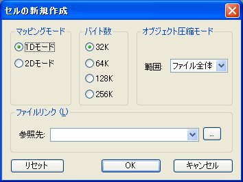

ここではTWL アプリに必要なTWL バナーをNITRO-CHARACTER を使用して作成する方法を説明します。
TWL バナーはこの方法の他にntexconv を使用して作成する方法もあります。
ntexconv を使用して作成する方法はbannercvtr をご参照ください。
以下にサンプルがあります。このサンプルを使って説明します。
$TwlSDK/build/demos.TWL/tips/TWLBanner_anim1/banner/SDK_demo
カラーパレットは 16 色 x 16 パレット（標準）で、0 番を使用してください。
0番以外のパレットを使用することはできません。
キャラクタは 16 色 x 16 パレット（標準）にしてください。
サイズはフリーサイズで32 x 4 (chr)を指定します。
セルのマッピングモードは 1D モード（32K）、オブジェクト圧縮モードは ファイル全体 にしてください。

1 つのセルには 32 x 32 ドットの OBJ を 1 つだけ配置します。プレビューのため、センターに配置します。
セルの上下反転、左右反転（Flip）はバナーアイコンに反映されますが、位置、半透明、ウィンドウ、モザイク、回転拡大縮小フラグ、倍角フラグは反映されません。
セルアニメーションは No.1 のものが変換されます。
セルアニメーションの動作（STOP / LOOP）はバナーアイコンに反映されます。
シーケンスデータ数はアニメーションが STOP の場合は 63 以下、LOOP の場合は 64 以下にしてください。
シーケンスデータの表示フレーム数は 255 以下にしてください。
シーケンスデータの位置、拡大縮小、回転はバナーアイコンに反映されません。
但しセルの上下反転、左右反転（[Flip] 欄のVH）を使用する場合に制限があります。
一つ前のシーケンス（[No.] 欄）と次のシーケンスではセルのキャラクタ番号（[Num.] 欄）を変更せずに、上下反転、左右反転のみ変更することはできません。
例えば、セルのキャラクタ番号は常に同じで、上下反転、左右反転のみを使ったアニメーションは作成できません。
そのようなアニメーションを作る場合は、必ず別のキャラクタ番号のセルを作成して使うようにして下さい。
アニメーションをLOOP 設定している場合は、最後のシーケンスと最初のシーケンスについても同じ制限があてはまります。
プレビューするには、NitroViewerを使用します。TwlSystem に同梱されている以下のツールを起動してください。
% $TwlSystem/tools/NitroViewer/***_NITRO-Viewer_Controller.bat
デフォルトでは、上画面に表示されますので、L ボタン+セレクトボタンで上下画面を切り替えてください。
TWL 本体ランチャー画面の背景とあわせてプレビューを行う場合は、サンプルにある以下のファイルを自分のプロジェクトフォルダにコピーします。
$SDK_demo/ColorPalette/banner_background(0〜F).ncl
$SDK_demo/Character/banner_background.ncg
$SDK_demo/Character/Screen/banner_background0.nsc
$SDK_demo/Character/Screen/banner_background1.nsc
$SDK_demo/Character/Screen/banner_background2_CARD.nsc
$SDK_demo/Character/Screen/banner_background2_NAND.nsc
$SDK_demo/Character/Screen/banner_background3.nsc
次にプレビューの設定を行います。以下にサンプルでのプレビュー設定を説明します。
BG には上記のファイルを、アニメーションリストには作成したバナーのセルアニメーションを設定してください。
| 番号 | 説明 |
|---|---|
| 01 | カラーパレットを変えることでバナーを囲むフレームの色を変更できます。 通常TWL 本体では本体設定の[ユーザー情報]-[ユーザーカラー]で設定した色になります。 各々のカラーパレットはOS_FAVORITE_COLOR_*の色と対応しています。 |
| 02 | カードアプリとNAND アプリでは表示される背景が異なります。 カードアプリの場合は、 banner_background2_CARD.nsc を、NAND アプリの場合は、 banner_background2_NAND.nsc を使用してください。
|
| 03 | banner_background1.nsc のY 座標は1 、banner_background2_****.nsc のY 座標は2 に設定してください。 |
| 04 | セルアニメーションの設定は、X 座標は128 、 Y 座標は114 に設定してください。 （但しセルをセンターに置いている場合） |
バナー (overview), makebanner.TWL, ntexconv, bannercvtr
2008/11/28 初版作成